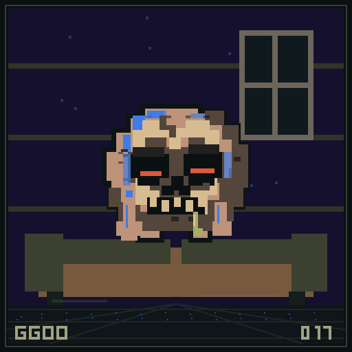
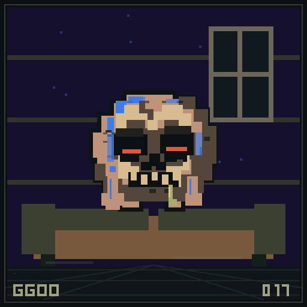
STUDY 017 1 GHOUL
Orbit + spin
Midnight · radius 9
Bare Cranium · Chocolate Chunks
BODY / ACCENT / SKY
Open native SVG ↗Inherited DNA / Native SVG / Motion studies
Crossing figure-eights. Elliptical orbits. Bouncing ricochets. Spinning goo, chewing jaws and two curling smoke wisps anchored to each ember. These specimens are actual SVG output from the current Solidity renderer, animated directly by your browser.
Motion is paused. Choose Play to animate these native SVGs.


Midnight · radius 9
Bare Cranium · Chocolate Chunks
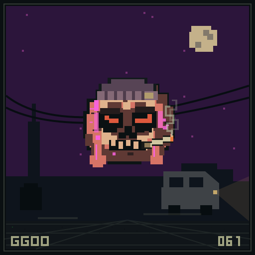
Sunset · radius 5
Grubby Beanie · Hash Crumble
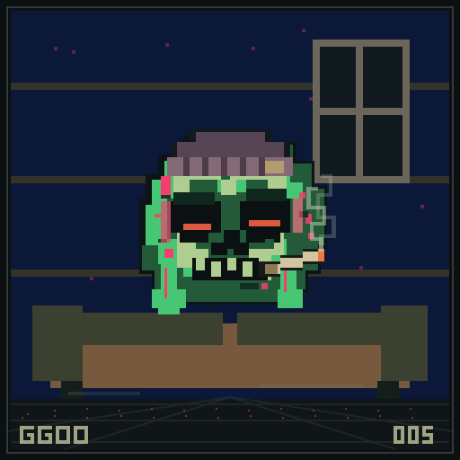
Lagoon · radius 9
Grubby Beanie · Oat Crust
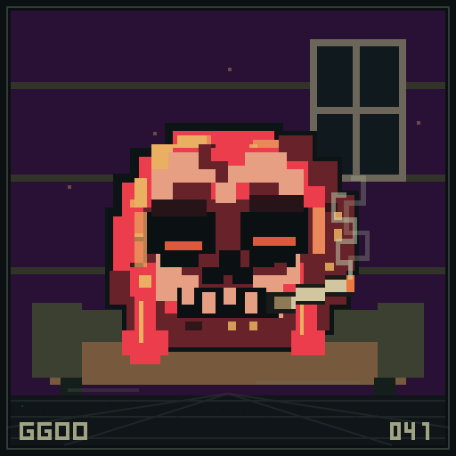
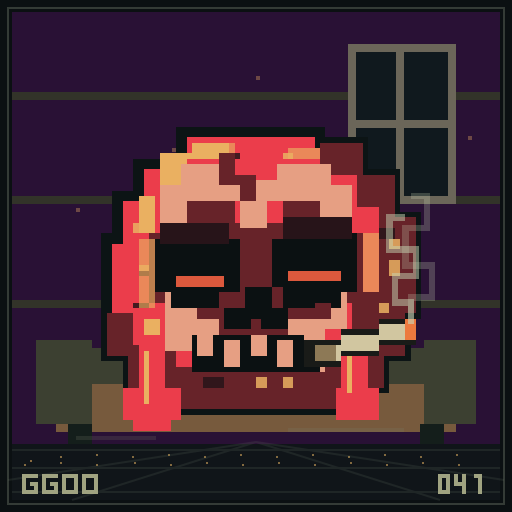
Ultraviolet · radius 9
Bare Cranium · Hash Crumble
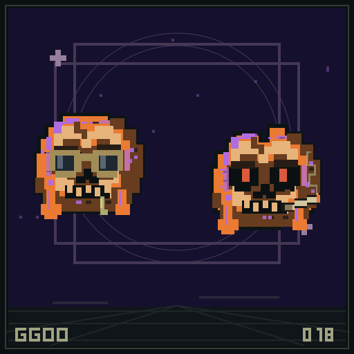
Midnight · radius 10
Crooked Shades · Oat Crust
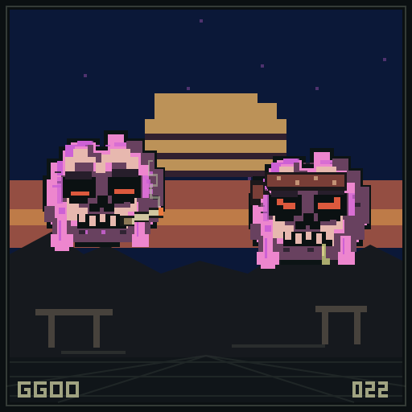
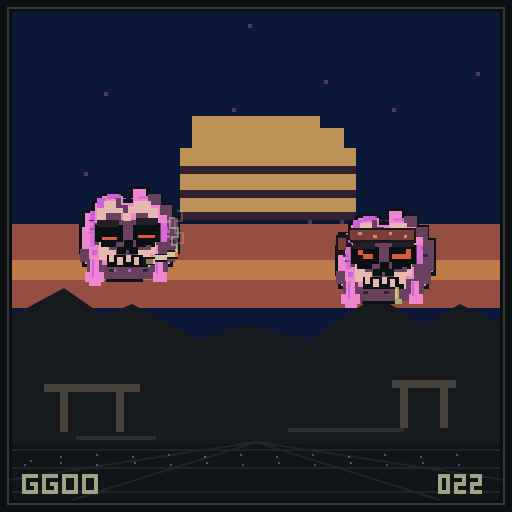
Lagoon · radius 8
Bare Cranium · Oat Crust
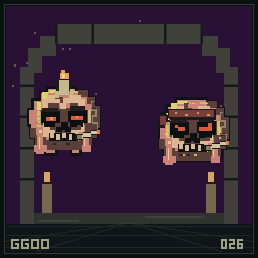
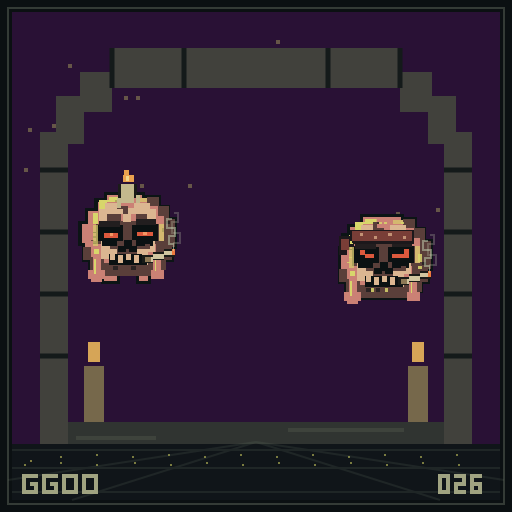
Ultraviolet · radius 6
Skull Candle · Chocolate Chunks
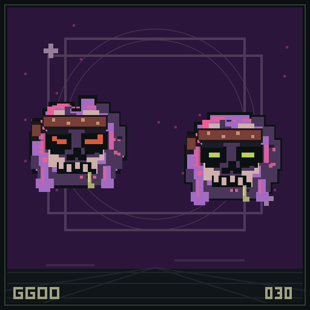
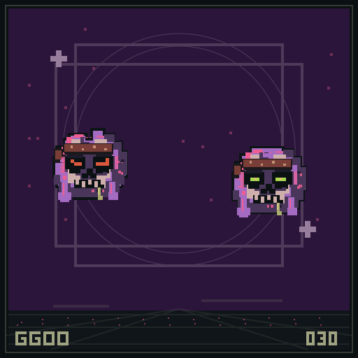
Sunset · radius 10
Lot Bandana · Hash Crumble
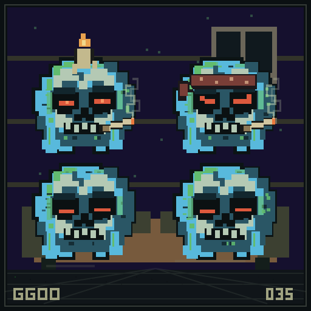
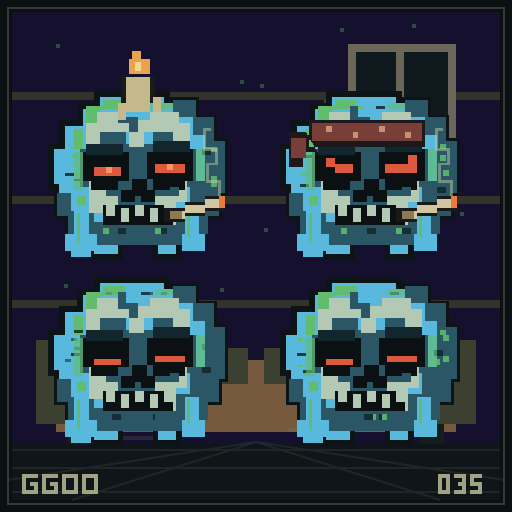
Midnight · radius 9
Skull Candle · Hash Crumble
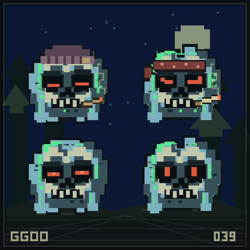
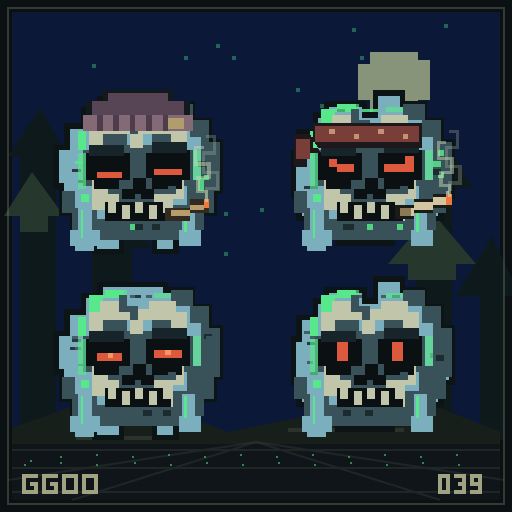
Lagoon · radius 7
Grubby Beanie · Hash Crumble
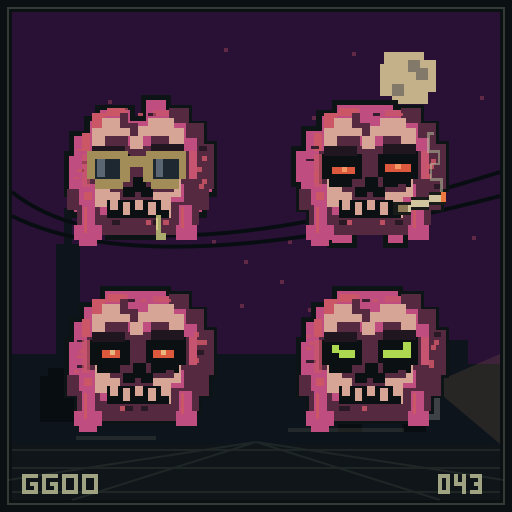
Ultraviolet · radius 5
Crooked Shades · Oat Crust
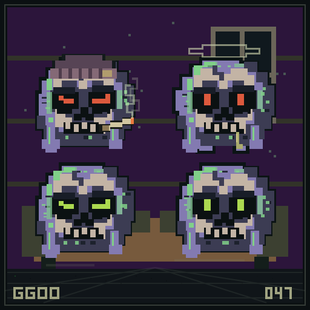
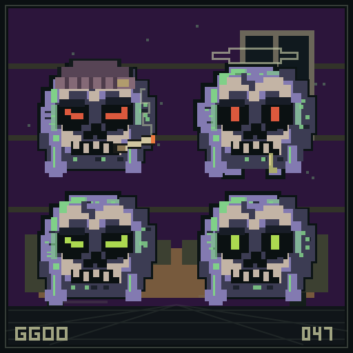
Sunset · radius 9
Grubby Beanie · Hash Crumble
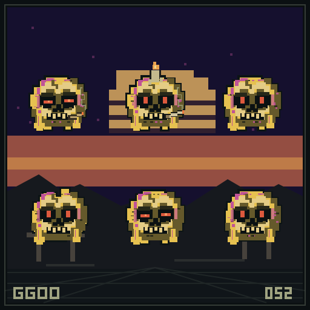
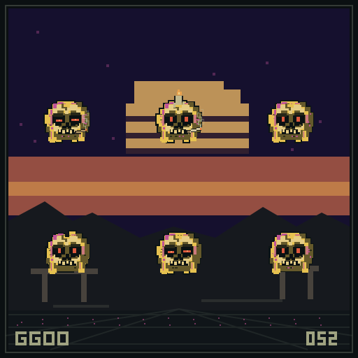
Midnight · radius 8
Bare Cranium · Oat Crust
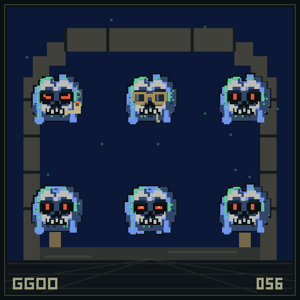
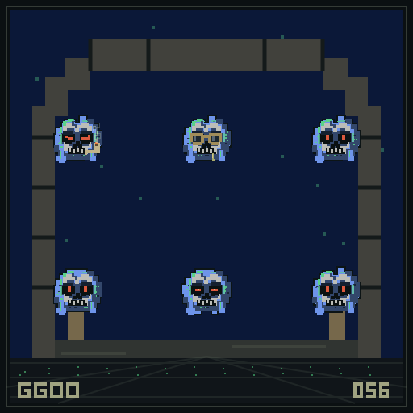
Lagoon · radius 6
Bare Cranium · Oat Crust
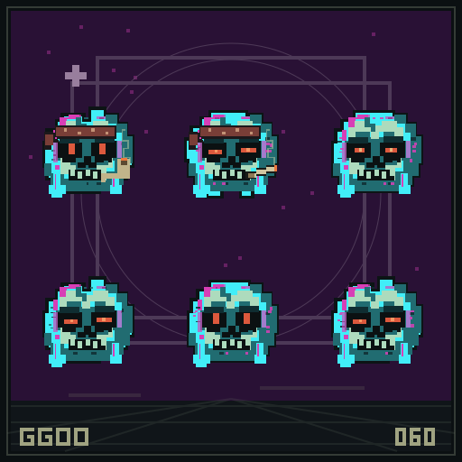
Ultraviolet · radius 10
Lot Bandana · Chocolate Chunks
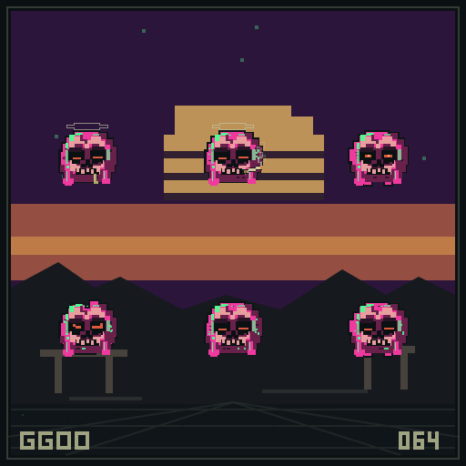
Sunset · radius 8
Smokering Halo · Chocolate Chunks